All systems share one frozen 48-kHz codec. Dynamic conditions use no more serialized bits than fixed depth at the same target (bitrates include all side information). Examples were drawn at random (seed 2026) from the evaluation sets and were not selected by result; music and environmental audio typically show small or no differences. Within an example, all conditions share one peak gain. Headphones recommended.
Reference
| Condition | Audio | kbps | Log-STFT vs fixed |
|---|---|---|---|
| Fixed depth | 3.03 | — | |
| UniAdapt causal online | 3.03 | +0.6% | |
| UniAdapt 500-ms lookahead (no extra delay) | 3.00 | -0.8% | |
| Offline utterance-level (non-causal, prefix budget not enforced) | 3.02 | -2.1% |
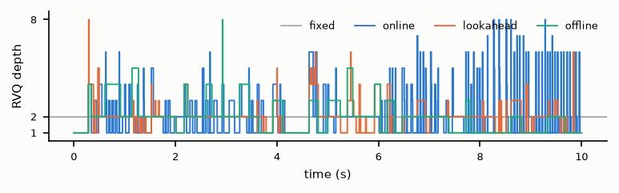
| Condition | Audio | kbps | Log-STFT vs fixed |
|---|---|---|---|
| Fixed depth | 6.03 | — | |
| UniAdapt causal online | 6.03 | +0.7% | |
| UniAdapt 500-ms lookahead (no extra delay) | 5.97 | -0.5% | |
| Offline utterance-level (non-causal, prefix budget not enforced) | 6.03 | -1.1% |
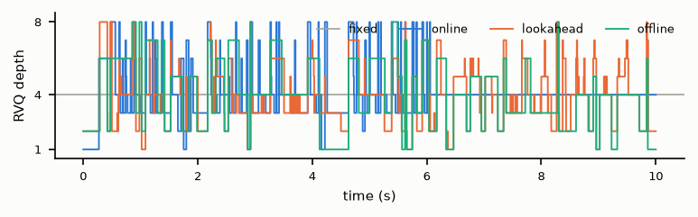
Reference
| Condition | Audio | kbps | Log-STFT vs fixed |
|---|---|---|---|
| Fixed depth | 3.10 | — | |
| UniAdapt causal online | 2.97 | -3.0% | |
| UniAdapt 500-ms lookahead (no extra delay) | 3.02 | -2.3% | |
| Offline utterance-level (non-causal, prefix budget not enforced) | 3.09 | -6.6% |
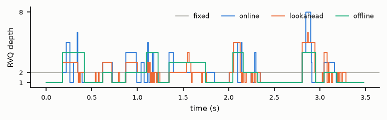
| Condition | Audio | kbps | Log-STFT vs fixed |
|---|---|---|---|
| Fixed depth | 6.10 | — | |
| UniAdapt causal online | 6.10 | -3.3% | |
| UniAdapt 500-ms lookahead (no extra delay) | 5.87 | -4.6% | |
| Offline utterance-level (non-causal, prefix budget not enforced) | 6.09 | -8.6% |
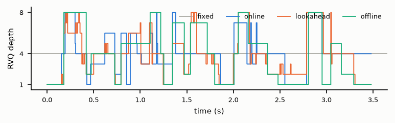
Reference
| Condition | Audio | kbps | Log-STFT vs fixed |
|---|---|---|---|
| Fixed depth | 3.07 | — | |
| UniAdapt causal online | 2.97 | -2.9% | |
| UniAdapt 500-ms lookahead (no extra delay) | 3.06 | -3.0% | |
| Offline utterance-level (non-causal, prefix budget not enforced) | 3.04 | -5.9% |
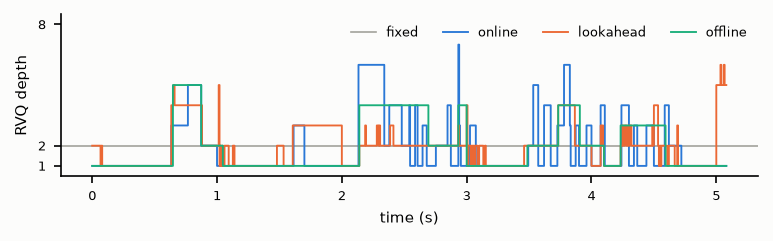
| Condition | Audio | kbps | Log-STFT vs fixed |
|---|---|---|---|
| Fixed depth | 6.07 | — | |
| UniAdapt causal online | 5.48 | -2.8% | |
| UniAdapt 500-ms lookahead (no extra delay) | 5.98 | -3.1% | |
| Offline utterance-level (non-causal, prefix budget not enforced) | 6.05 | -7.4% |
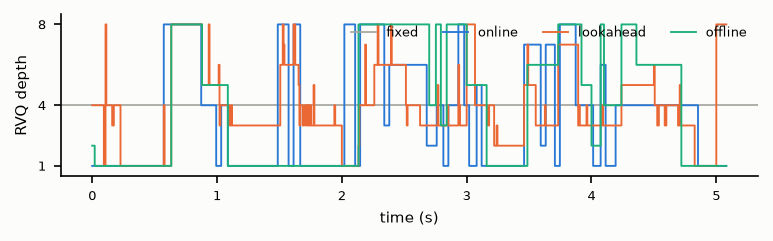
Reference
| Condition | Audio | kbps | Log-STFT vs fixed |
|---|---|---|---|
| Fixed depth | 3.10 | — | |
| UniAdapt causal online | 2.85 | +1.5% | |
| UniAdapt 500-ms lookahead (no extra delay) | 3.06 | +0.1% | |
| Offline utterance-level (non-causal, prefix budget not enforced) | 3.02 | -2.2% |
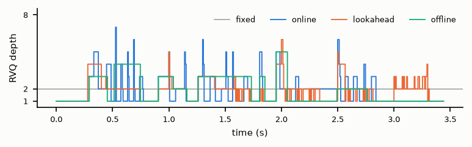
| Condition | Audio | kbps | Log-STFT vs fixed |
|---|---|---|---|
| Fixed depth | 6.11 | — | |
| UniAdapt causal online | 6.11 | -0.0% | |
| UniAdapt 500-ms lookahead (no extra delay) | 5.99 | -0.5% | |
| Offline utterance-level (non-causal, prefix budget not enforced) | 6.09 | -4.6% |
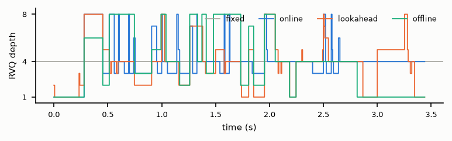
Reference
| Condition | Audio | kbps | Log-STFT vs fixed |
|---|---|---|---|
| Fixed depth | 3.04 | — | |
| UniAdapt causal online | 2.72 | +1.7% | |
| UniAdapt 500-ms lookahead (no extra delay) | 3.04 | -0.2% | |
| Offline utterance-level (non-causal, prefix budget not enforced) | 3.02 | -5.1% |
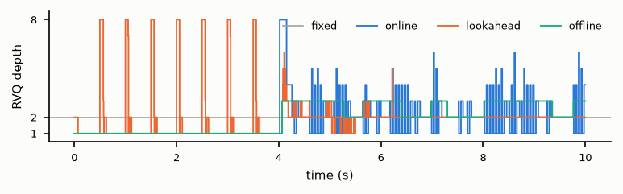
| Condition | Audio | kbps | Log-STFT vs fixed |
|---|---|---|---|
| Fixed depth | 6.04 | — | |
| UniAdapt causal online | 4.58 | -1.1% | |
| UniAdapt 500-ms lookahead (no extra delay) | 6.03 | +0.0% | |
| Offline utterance-level (non-causal, prefix budget not enforced) | 5.99 | -7.1% |
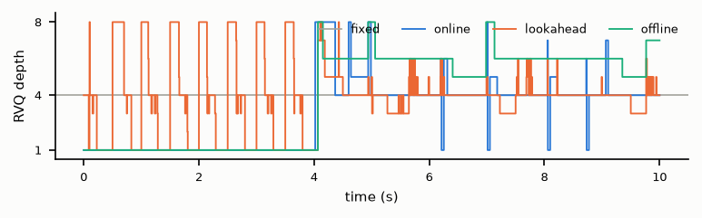
Reference
| Condition | Audio | kbps | Log-STFT vs fixed |
|---|---|---|---|
| Fixed depth | 3.04 | — | |
| UniAdapt causal online | 2.70 | -0.3% | |
| UniAdapt 500-ms lookahead (no extra delay) | 3.02 | -0.1% | |
| Offline utterance-level (non-causal, prefix budget not enforced) | 3.00 | -1.9% |
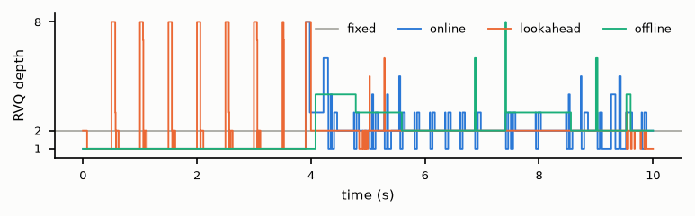
| Condition | Audio | kbps | Log-STFT vs fixed |
|---|---|---|---|
| Fixed depth | 6.04 | — | |
| UniAdapt causal online | 4.56 | -0.7% | |
| UniAdapt 500-ms lookahead (no extra delay) | 6.04 | -0.4% | |
| Offline utterance-level (non-causal, prefix budget not enforced) | 6.00 | -3.5% |
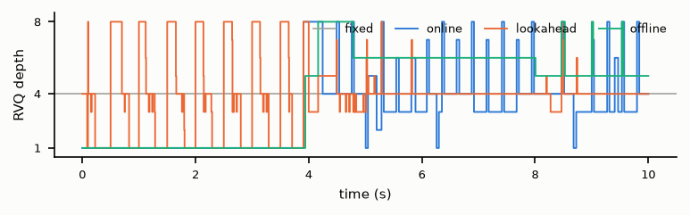
Reference
| Condition | Audio | kbps | Log-STFT vs fixed |
|---|---|---|---|
| Fixed depth | 3.05 | — | |
| UniAdapt causal online | 3.05 | +0.2% | |
| UniAdapt 500-ms lookahead (no extra delay) | 3.03 | +0.0% | |
| Offline utterance-level (non-causal, prefix budget not enforced) | 3.02 | +0.5% |
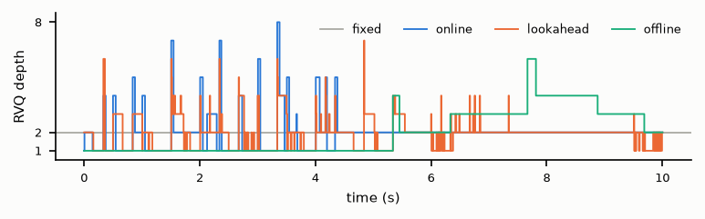
| Condition | Audio | kbps | Log-STFT vs fixed |
|---|---|---|---|
| Fixed depth | 6.05 | — | |
| UniAdapt causal online | 6.05 | -0.6% | |
| UniAdapt 500-ms lookahead (no extra delay) | 6.05 | -0.4% | |
| Offline utterance-level (non-causal, prefix budget not enforced) | 6.01 | -0.8% |
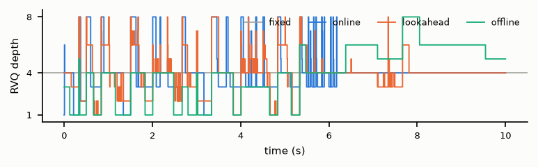
Reference
| Condition | Audio | kbps | Log-STFT vs fixed |
|---|---|---|---|
| Fixed depth | 3.04 | — | |
| UniAdapt causal online | 3.04 | +3.0% | |
| UniAdapt 500-ms lookahead (no extra delay) | 3.03 | -0.9% | |
| Offline utterance-level (non-causal, prefix budget not enforced) | 3.03 | -2.0% |
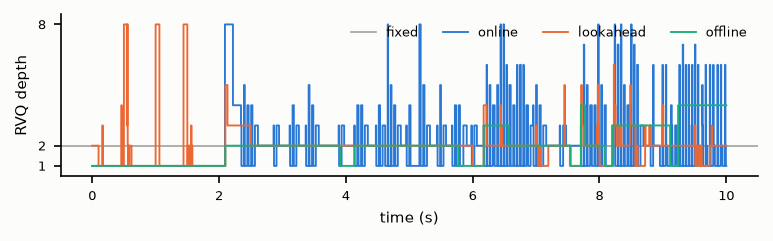
| Condition | Audio | kbps | Log-STFT vs fixed |
|---|---|---|---|
| Fixed depth | 6.04 | — | |
| UniAdapt causal online | 5.53 | +2.4% | |
| UniAdapt 500-ms lookahead (no extra delay) | 6.03 | -0.2% | |
| Offline utterance-level (non-causal, prefix budget not enforced) | 6.02 | -3.0% |
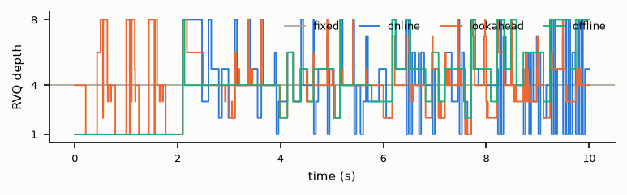
Reference
| Condition | Audio | kbps | Log-STFT vs fixed |
|---|---|---|---|
| Fixed depth | 3.06 | — | |
| UniAdapt causal online | 3.00 | +0.5% | |
| UniAdapt 500-ms lookahead (no extra delay) | 3.06 | -0.5% | |
| Offline utterance-level (non-causal, prefix budget not enforced) | 3.06 | -2.9% |
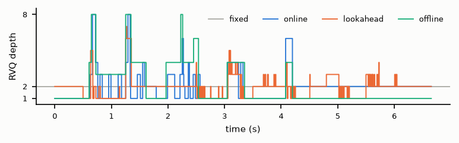
| Condition | Audio | kbps | Log-STFT vs fixed |
|---|---|---|---|
| Fixed depth | 6.06 | — | |
| UniAdapt causal online | 5.85 | -0.4% | |
| UniAdapt 500-ms lookahead (no extra delay) | 6.06 | -0.8% | |
| Offline utterance-level (non-causal, prefix budget not enforced) | 6.03 | -3.6% |
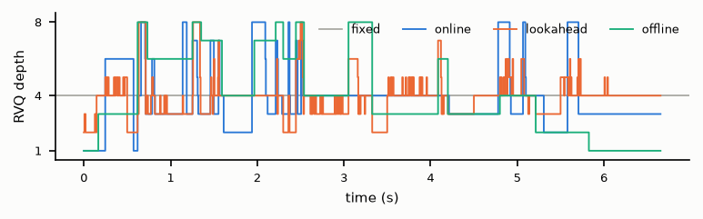
Reference
| Condition | Audio | kbps | Log-STFT vs fixed |
|---|---|---|---|
| Fixed depth | 3.04 | — | |
| UniAdapt causal online | 2.95 | +1.2% | |
| UniAdapt 500-ms lookahead (no extra delay) | 3.04 | -0.0% | |
| Offline utterance-level (non-causal, prefix budget not enforced) | 2.95 | -4.7% |
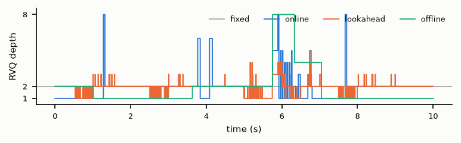
| Condition | Audio | kbps | Log-STFT vs fixed |
|---|---|---|---|
| Fixed depth | 6.04 | — | |
| UniAdapt causal online | 5.63 | -0.0% | |
| UniAdapt 500-ms lookahead (no extra delay) | 6.04 | -1.2% | |
| Offline utterance-level (non-causal, prefix budget not enforced) | 5.96 | -4.7% |
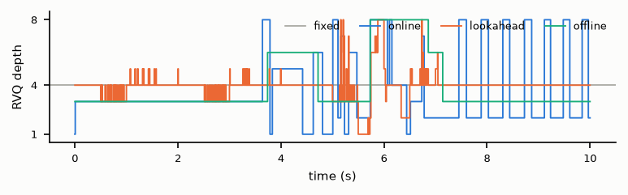
Reference
| Condition | Audio | kbps | Log-STFT vs fixed |
|---|---|---|---|
| Fixed depth | 3.14 | — | |
| UniAdapt causal online | 2.85 | +0.9% | |
| UniAdapt 500-ms lookahead (no extra delay) | 3.13 | +3.2% | |
| Offline utterance-level (non-causal, prefix budget not enforced) | 3.06 | -0.1% |
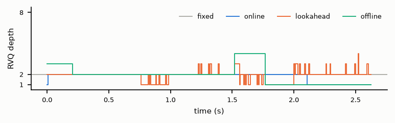
| Condition | Audio | kbps | Log-STFT vs fixed |
|---|---|---|---|
| Fixed depth | 6.15 | — | |
| UniAdapt causal online | 6.15 | -0.4% | |
| UniAdapt 500-ms lookahead (no extra delay) | 6.12 | +0.5% | |
| Offline utterance-level (non-causal, prefix budget not enforced) | 6.11 | -1.3% |
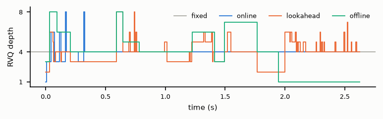
Reference
| Condition | Audio | kbps | Log-STFT vs fixed |
|---|---|---|---|
| Fixed depth | 3.05 | — | |
| UniAdapt causal online | 2.92 | +0.1% | |
| UniAdapt 500-ms lookahead (no extra delay) | 2.96 | -0.4% | |
| Offline utterance-level (non-causal, prefix budget not enforced) | 2.99 | -1.3% |
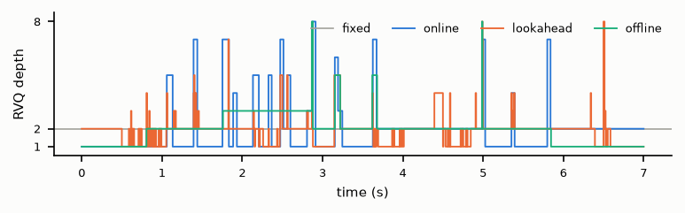
| Condition | Audio | kbps | Log-STFT vs fixed |
|---|---|---|---|
| Fixed depth | 6.05 | — | |
| UniAdapt causal online | 5.67 | +0.1% | |
| UniAdapt 500-ms lookahead (no extra delay) | 5.89 | -0.3% | |
| Offline utterance-level (non-causal, prefix budget not enforced) | 6.01 | -0.6% |
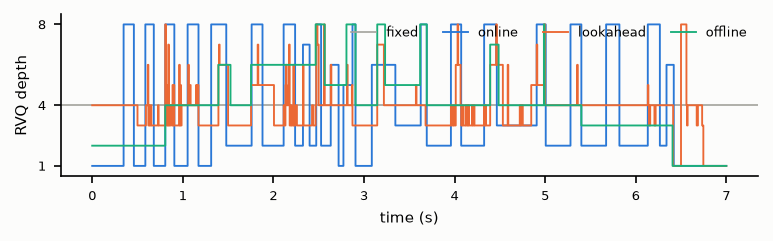